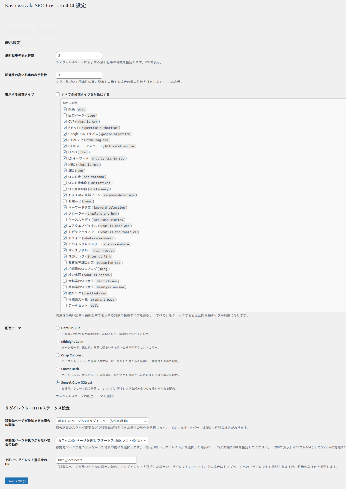

機能詳細
Kashiwazaki SEO Custom 404 が提供する各機能について詳しく説明します。スマート検出、JSON-LD出力、カラーテーマなど、SEOとユーザー体験を両立する機能を備えています。
スマート検出（移転先ページの自動検出）
存在しないURLにアクセスがあった際、プラグインはスラッグ解析とタイトルキーワードマッチを組み合わせて、移転先と思われるページを自動的に検出します。

検出の仕組み
スラッグ解析 - リクエストされたURLのスラッグ（URLの末尾部分）を分解し、既存の投稿・固定ページのスラッグと照合します。
タイトルキーワードマッチ - スラッグから抽出したキーワードを使い、既存コンテンツのタイトルとマッチングを行います。
候補ページの提示 - マッチしたページが見つかった場合、404ページ内でユーザーに移転先として提示します。
ヒント
スマート検出はデータベースへの直接クエリを使用しており、外部APIやAJAX通信を一切使用しません。そのため、サーバーの負荷を最小限に抑えながら高速に動作します。
JSON-LD WebPageスキーマ出力
本プラグインは、404ページにJSON-LD形式のWebPageスキーマを出力します。これにより、検索エンジンとAIクローラーに対して、機械可読な形式でリダイレクト情報を提供します。
出力される構造化データ
| プロパティ | 説明 |
|---|---|
| @type | WebPage - ページの種類を示します |
| mentions | 移転先として検出されたページへの参照情報 |
| potentialAction | 検索エンジンに対する推奨アクション情報 |
SEOへの効果
JSON-LDによる構造化データは、検索エンジンが404ページの情報を正確に理解するのに役立ちます。特に、移転先ページの情報をmachines-readableな形式で提供することで、検索エンジンのクロール効率が向上します。
GEO（生成エンジン最適化）への効果
AIを活用した検索エンジンやクローラーは、構造化データとcanonicalシグナルを基にコンテンツの所在を判断します。JSON-LDスキーマとCanonicalヘッダーの組み合わせにより、AIクローラーも正確にリダイレクト先を把握できます。
Canonicalヘッダーサポート
移転先ページが検出された場合、HTTPレスポンスヘッダーにCanonical情報を出力します。これにより、検索エンジンは正規のURLを認識し、インデックスの重複を防止できます。
メモ
Canonicalヘッダーは、検索エンジンに「このURLの正規版はここです」と伝える重要なシグナルです。404ページでcanonicalを適切に設定することで、検索エンジンが正しいページをインデックスに保持できます。
HTTP 404/410 ステータスコード
本プラグインは、状況に応じて適切なHTTPステータスコードを返します。
| ステータスコード | 用途 |
|---|---|
| 404 Not Found | リクエストされたページが見つからない場合に返します。検索エンジンは一定期間後に再クロールを試みます。 |
| 410 Gone | ページが恒久的に削除された場合に返します。検索エンジンはインデックスからの削除を迅速に行います。 |
適切なステータスコードを返すことで、検索エンジンがデッドURLをインデックスから効率的に削除し、クロールバジェットの無駄遣いを防ぎます。
関連記事・最新記事の表示
404ページにユーザーの探していた情報に近いコンテンツを表示することで、サイトからの離脱を防止します。
表示コンテンツ
| 表示タイプ | 説明 |
|---|---|
| 関連記事（タグベース） | リクエストURLから推定されるタグに基づいて、関連性の高い記事を表示します |
| 最新記事 | サイトの最新記事を表示し、ユーザーに新しいコンテンツを提案します |
5色カラーテーマ
サイトのデザインに合わせて、5種類のカラーテーマから選択できます。
| テーマ名 | 特徴 |
|---|---|
| Default Blue | 清潔感のある青を基調とした標準テーマ |
| Midnight Calm | 落ち着いたダークトーンで、目に優しい配色 |
| Crisp Contrast | 高コントラストでシャープな印象を与えるテーマ |
| Forest Bath | 自然をイメージしたグリーン系の癒しのテーマ |
| Sunset Glow | 温かみのあるオレンジ・サンセット系のテーマ |
ヒント
テーマの変更は管理画面の設定ページから即座に行えます。プレビューを確認しながら、サイトに最適なテーマを選択してください。
セキュリティ対策
本プラグインは、WordPress標準のセキュリティプラクティスに準拠しています。
| 対策 | 詳細 |
|---|---|
| nonce検証 | 設定保存時にnonceトークンを検証し、CSRF攻撃を防止します |
| 権限チェック | manage_options権限を持つユーザー（管理者）のみが設定を変更できます |
| 入力サニタイズ | sanitize_key / absint / esc_url_raw を使用して入力値を安全に処理します |
| SQLインジェクション対策 | $wpdb->prepare を使用してSQLクエリを安全に構築します |